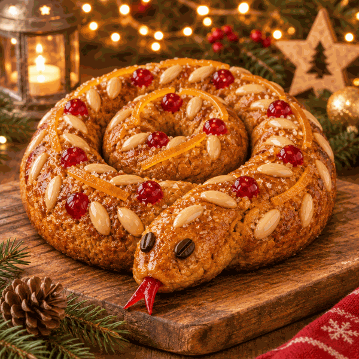

Todas las recetas › Gubbio
Las Fiestas de Tavolata: Gubbio
Torciglione
El torciglione es el dulce navideño de Umbría con forma de serpiente: según la tradición, recuerda a las anguilas del lago Trasimeno.
Raciones8
Preparación30 min
Cocción40 min
DificultadFácil
Alérgenos: Frutos secos, Huevos, Gluten

Ingredientes
- Almendras peladas · 300 g
- Azúcar · 200 g
- Claras · 3
- Harina · 30 g
- Ralladura de limón · ralladura de 1
- Piñones · 50 g
- Granos de café · 2
- Cereza confitada · 1
Paso a paso
- Tritura finamente las almendras con el azúcar, guardando un puñado enteras para decorar.
- Monta las claras a punto de nieve y mézclalas con cuidado con las almendras trituradas, la harina y la ralladura de limón, hasta obtener una masa blanda.
- En una bandeja con papel de horno, da a la masa forma de serpiente enroscada. Cúbrela con piñones y almendras, pon dos granos de café como ojos y la cereza confitada como lengua.
- Hornea a 170 °C unos 40 minutos, hasta que esté dorado por fuera y aún tierno por dentro.
El consejo del chef. Pinta la superficie con un poco de clara antes de poner los piñones: se quedan pegados y en el horno se vuelven brillantes.
Cocina esta receta también en Tavolata
En el juego combinas ingredientes, completas pedidos y restauras ciudades italianas, de Firenze a Milano. Gratis, con recetas auténticas en el Recetario.
Descargar en el App Store